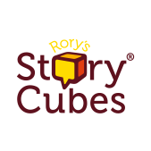
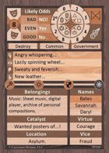

Oracles for solo play
"Ride together, don't try it, the power's in one."
Oracles should only be used to generate story information you would otherwise be getting from the DM in non-solo play. They shouldn't be used for things like skill checks, which can be resolved with your game system's rules.
Yes/No Oracle
(I prefer open-ended oracles whenever possible, such as story cubes or GMA cards.) To use the yes/no oracle on the left:
- Assign one of the likelihoods to the question
- Roll percentage dice and a d20
- The results of the percentage dice tell you if the answer is yes or no
- Based on the answer of yes or no, find the matching and/but subtable on the right of the chart, and compare the result of the d20. If it falls into a "and" or "but" range, then modify the "yes" or "no" answer accordingly. If the d20 does not fall into either range, then the answer is a straight yes or no.
Open-Ended Oracles


Anchors
Anchors can be used with any oracle. I use them to ensure that the themes I'm interested in don't get over-looked, and that the flavor and history of my world stays consistent. Anchors consist of a list of heterogeneous items (they can be themes, inpsiration words, in-game objects like NPCs or historical events, etc...). Create an anchor list, and then every time you consult an oracle (or every other time, or when the mood suits you), roll on, or pick from, the anchor list, and tie it into your oracle's answer. The following is my WIP anchor list, which is also doubling as my world-building notes, for now.
- Dogs are the best!
- I got half a pair of shoes and no time to lose
- Now I'm sittin' all alone at a table for two, she must've gone via Miami
- Fortune favors the bold.
- Look before you leap has never been the way we keep our road is free
- Rush headlong into any dare
- The Sodality
- The Pit
- Pit opening under buried bodies creates certain undead
- Credulity - it's easier to lie in a world of miracles
- Teina kinship, spans races
- The Wahine Kule (Sleepless)
- Anti-authoritarian / Anti-state
- Fear of the Straw Death
- Virtual citizenship
- Opportunistic farming
- The Great Halls Of Terr'Akkas
- Cults
- Demonology
- The Named Generations:
-
Adomi - The 1st generation - analgous to the Titans: seemingly secretive and aloof to (the rest of) humanity
-
Zuir - The 2nd generation - The Greek gods to the Adomi's Titans. Hypocritically emotional
-
Hieli - the 3rd generation - The demi-gods and folk heroes to the Zuir's Olympians
- The origin of vampirism - attempt to gain immortality through drinking dad's blood - it worked, but at a price
- year 200: The generation of peak jealousy and curses: The Zuir see their cousins and children die while all the Adomi remain young.
- We're all purposeless bags of meat. This does not make morality or joy any less real.
- We're up to the witch. We may never ever ever come home. But the magic that we'll feel is worth a lifetime.
- Honesty can be hard and put you at a disadvantage. Be honest anyway.
- The Truth
-
It's all a big nothing. What makes you think you're so special? (the trick is that this shouldn't be rhetorical)
-
O'er his white banes, when they are bare,
The wind sall blaw for evermair.
- Bimmi
- Flower Wars
- Xenni shells
- Challenge token (e.g predator teeth, awsome symbolic gift, well-crafted item) - TODO: what's the game? Not beer!
- Nobody wants to die without at least one neaningful token/fetish to be buried with
- Buried with a fetish allows spirit to linger longer with clan
- Proper burial ensures fetishes remain with the corpse
- Ancestor worship
- Walking to other planes
- The borders: Mountains, Mistlands, Ocean, Cliff (leads to the Pit?), Sky, Desert gets hotter and hotter and then boiling
- Spirits. The spirit realm is of this world, and not separate from it. The spirit realm is an inaccessible part of the world like the ocean depths are an inaccessible part of the world.
- Kami: Spirits of non-living things. Definitely sentient, though, but of limited intelligence. No possession capability. Cannot abide Outsiders.
- Totems: Spirits of types of living things. A totem is the sum of the spritedness of all living and dead specimens of the type of thing. May take material form as a normal or unusual specimen of the creature. Limited posession capability.
- Independent: No attachments to the material aspect of the world, but may take material form (so to be fair, material entities should be able to take spirit form?). Trickster spirits come form this group
- Spirits of the dead:
- Humanize non-human races / common cause / carving out a place
- The seeds of legends
- Magic is still... working its magic
Thin No line between outstanding skill and magic
- Communal tools, and other communal stuff
- Opposite Day / Roasting of heroes
- Childhood
- Symboitic menagerie
- Taena & Lan: The titans who burned the sky - the stars are the remaining embers
- The Wizard Who Shook The World in 68
- Leadership Is Stewardship
- The First Torona (thrones)
- Giant Armada wreckage * 2. And then they just kept running.
- All the fools sailed anyway
- They managed to land safely, unlike certain giants I could name
- Promising the life of the Adomi. We're your one great chance for a miracle.
- One of the Adomi is helping evangelize
- Trickster spirits
- Extinction
- One humanoid species already extinct
- One humanoid species going extinct
- One humanoid species recently appeared
- Long-term plan to thwart the flood-bringer
GMA Cards
Countdown Timer
Start somewhere in the dice chain d20 - d20 - d10 - d8 - d6 - d4, call this the risk die. Every time an event occurs where the timer should count down, roll the risk die. On a 1, 2, or 3, step down to the next die size in the chain. If the risk die is a d4 and you roll 1, 2, or 3, time's up.
You can achieve similar effects with dice pools. Dump some d6s on the table; that's your timer. Roll on event. Take out every die that hits a certain culling target (like 1, 2, or 3 if you want it to run fast, or just a 1 if you want it to go slower). Once the last die is gone, the time's up.
{kind=link}